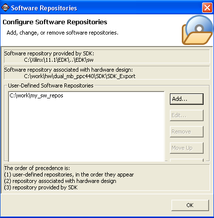

Software repositories
Xilinx embedded software
Select Tools > Software Repositories to open the Software Repositories dialog box, in which you can specify your software repository location.

The following functions are available in the Software Repositories dialog box:
| Name | Function |
|---|---|
| Software repository provided by SDK field | The location of the installed software repository. |
| Software repository associated with hardware design field | The location of the local software repository. Add any software repositories specific to your hardware design in this location. |
| User-Defined Software Repositories | The location of your global software repository. |

Software repositories
Xilinx embedded software

Setting up software repositories
Creating software projects
Copyright © 1995-2009 Xilinx, Inc. All rights reserved.